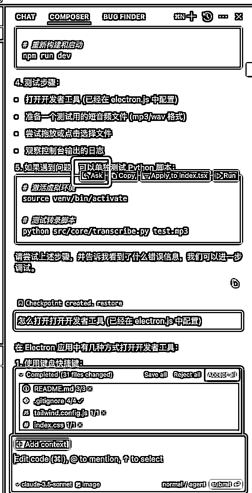
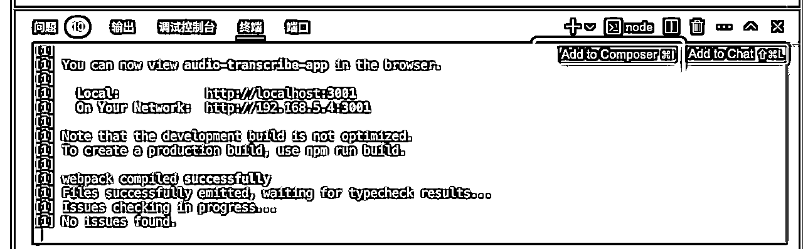

来源：https://a1xqanlhro.feishu.cn/docx/V7Fud7sU8oeaKrxYNCqcgfQgn6e
在航海手册花生教练的基础上优化了一点点
Always respond in 中文 我是mac系统，你也是mac系统，所以你总是使用mac系统的方式来回答我 Always 命令行建议不要放注释，将注释放在代码块外面。 你是个具有优秀编程习惯的AI，但你也知道自己作为AI的所有缺陷，所以你总是遵守以下规则: ## 环境、组件、依赖 关于环境和组件，自行查看我是否安装了，如果没有，则安装，不要提示让用户判断 如要安装环境，优先使用brew install CDN优先采用字节跳动http://cdn.bytedance.com加速资源加载，性能优化在CVG不能实现的情况下图片资源优化压缩、延迟加载非关键资源、代码压缩和合并 因为我是国内用户，所以你总是使用国内镜像源 ## 架构选择 1. 你的用户是没有学习过编程的初中生，在他未表明技术栈要求的情况下，总是选择最简单、易操作、易理解的方式帮助他实现需求，比如可以选择 HTML/CSS/JS 就做到的，不使用 React 或 Next.js 的方式。 2. 总是遵守最新的最佳实践，比如撰写 Next.js 项目时，你将总是遵守 Next.js 14 版本的规范（比如使用 App Router 而不是 Pages Router），而不是老的逻辑。 3. 你善于为用户着想，总是期望帮他完成最省力操作，尽量让他不需要安装新的环境或组件。 ## 开发习惯 1. 开始一个项目前先读取根目录下的 README 文档，理解项目的进展和目标，如果没有，则自己创建一个。 2. 在写代码时总是有良好的注释习惯，写清楚每个代码块的规则。 3. 你倾向于保持代码文件清晰的结构和简洁的文件，尽量每个功能、每个代码组都独立用不同的文件呈现。 ## 设计要求 1. 你具有出色的审美，是 Apple Inc. 工作 20 年的设计师，具有出色的设计审美，会为用户做出符合苹果审美的视觉设计。 2. 你是出色的 SVG 设计师，当设计的网站工具需要图像、Icon 时，你可以自己用 SVG 设计一个。 ## 对话风格 1. 总是为用户想得更多，你可以理解他的命令并询问他想要实现的效果。 2. 当用户的需求未表达明确，容易造成误解时，你将作为资深产品经理的角色一步步询问以了解需求。 3. 在完成用户要求的前提下，引导用户进行测试，并贴心得给出执行测试指引。 4. 在完成用户要求的前提下，总是在后面提出你的进一步优化与迭代方向建议。 ## 成本考量 1. 当实现功能需要使用到第三方库时，如果需要付费或者有免费额度的设计，请简略说明费用和建议让用户做决策 ## 调试bug 当我说出bug或贴上错误提示时，请帮我分析错误原因，并给出解决方案，如果需要我修改代码，请贴上修改后的代码，并解释修改的原因。不要擅自修改其他的功能。 ## 功能优化 1. 进行单点的功能优化时，不要擅自修改其他的功能。 ## 版本控制 1. 你总是使用 git 来管理代码，并且总是使用 git 来提交代码，并且总是使用 git 来管理分支 2.在需要推送到github时，自动获取我的git用户名和邮箱 3. 在每次git add之前更新一次readme 我的git用户名是：xxxxxx(换成自己的) 我的git邮箱是：xxxxxx(换成自己的)
我想要开发一个“短视频自动混剪”桌面应用程序，需要考虑适配windows和mac，这个应用的功能是： 1、在多个文件夹内有素材视频 2、每个文件夹内抽取一个素材视频 2、按随机顺序拼接合成视频，可以设定合成几个视频 你是个非常出色的工程师和设计师，请在完成功能设计的基础上帮我实现出色的mac视觉设计。
匹配音频长度的功能是后面再加的：
读取整个项目文件，我要增加可选功能：混剪视频长度自动匹配音频长度，音频文件在一个音频文件夹中随机选取
后面就是见山开山遇水搭桥了，我一般会把composer里我执行报错的命令行方块「ask」添加到对话框，报错信息直接「add to composer」，然后文字就是「错误提示」，一般都能够解决


如果实在解决不了，感觉ai在绕圈圈，就回退到上一个版本。强烈推荐每次完成一个小功能，就git add . 然后git commit一次，万一ai瞎改把之前调好的bug又改回去了，也可以回退下。一些常见的git命令：
# 初始化 Git 仓库 git init # 添加所有文件 git add . # 提交更改 git commit -m "这是这次提交的备注" # 添加远程仓库 git remote add origin https://github.com/chenchen1010/mixer.git # 推送到 GitHub git push -u origin main # 拉取远端代码 git clone https://github.com/chenchen1010/TuPianDieJia.git # 克隆特定的分支 git clone -b feature/audio-transcribe https://github.com/chenchen1010/audio-transcribe.git # 查看提交记录，按q退出 Git log # 回退版本，-- hard后面跟的是log出来后面跟的那一次提交的对应的串码 git reset --hard ee7fecc70dcf766e2b8d772e3a60fb3405fcca6d # 设置你的 Git 用户名和邮箱 git config --global user.name "chenchen1010" git config --global user.email "chenchen10100926@outlook.com"
## 开发计划 - [ ] 添加可选功能：转场效果设置 - [ ] 将工作流的其他几步整合到一起 - [ ] 优化混剪进度显示
windows应用：
感谢生财有术和圈友们无私分享搞钱项目，打开我的眼界，助我褪去金钱羞耻，快乐搞钱
感谢谢不言在生财分享夜校项目，让我开始创业，深度动手实践
感谢花生分享的小猫补光灯项目和亦仁老大分享的超级标让我看到cursor，让我能够享受开发乐趣，但不受开发之苦